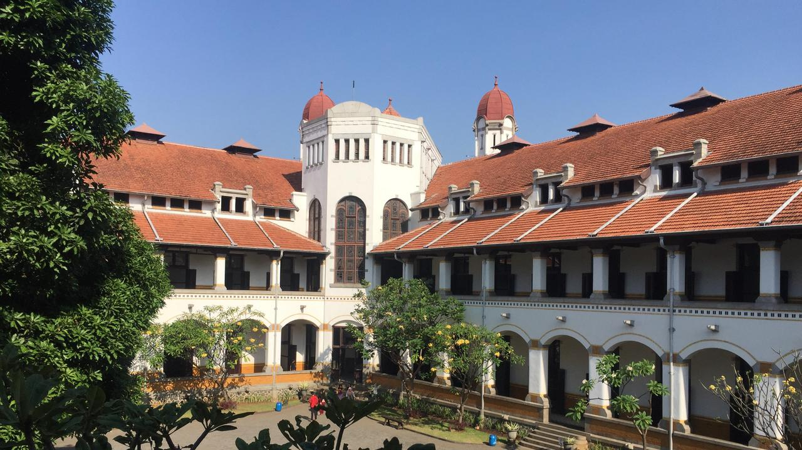
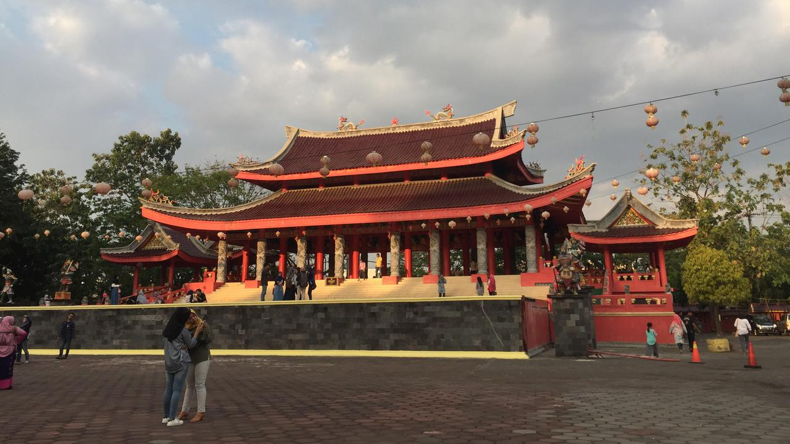
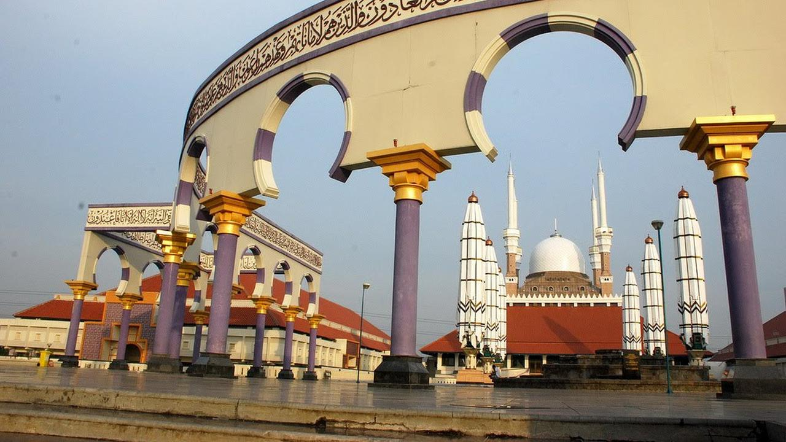
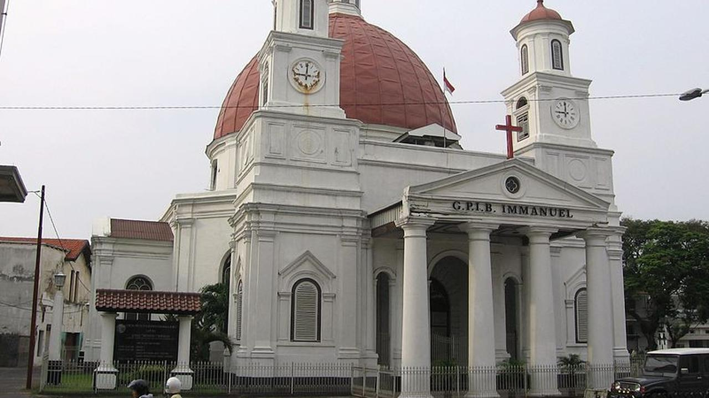
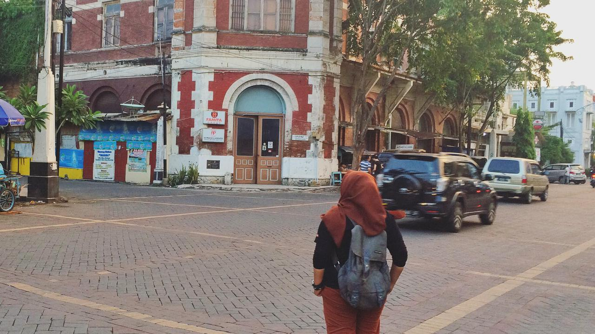
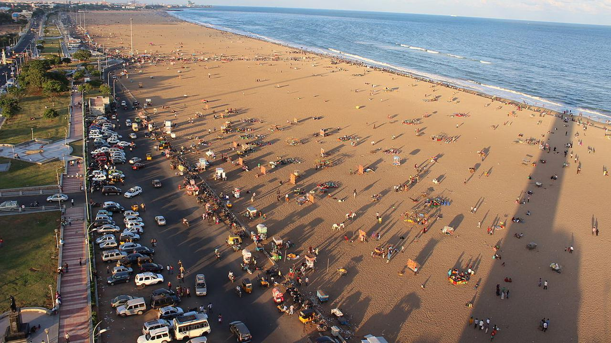
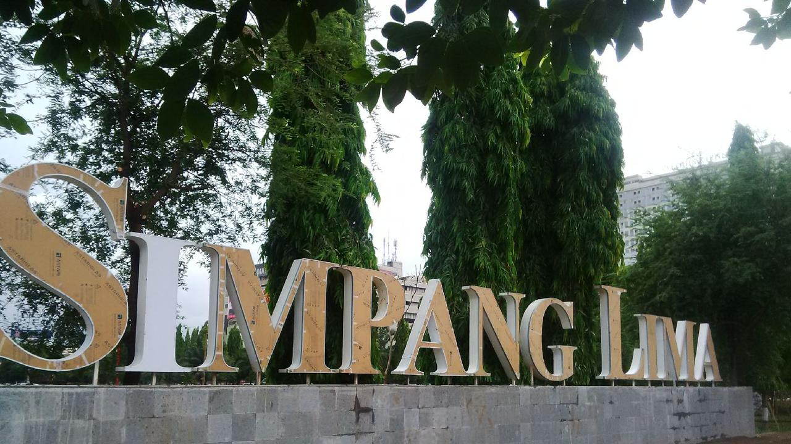
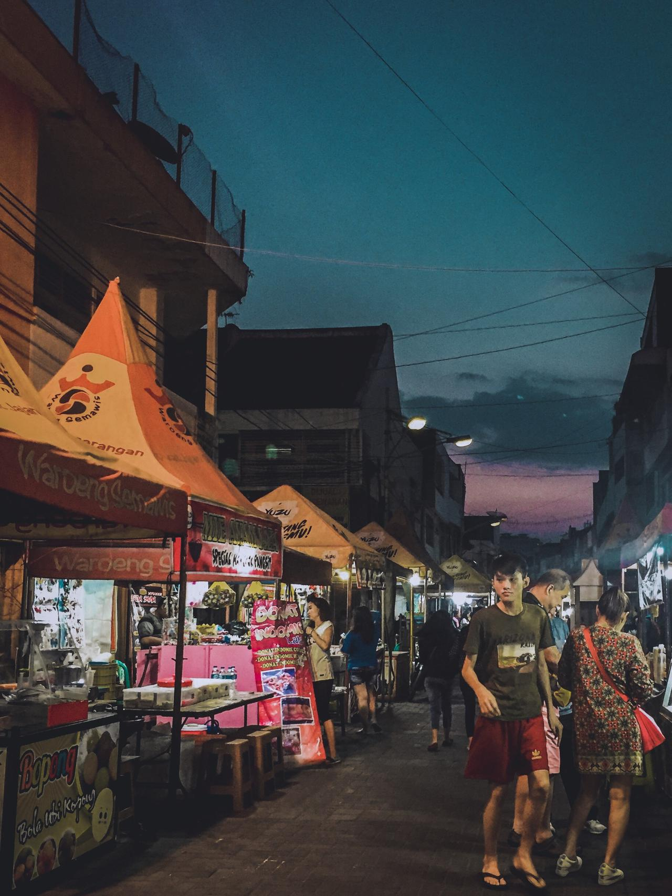

Diposting Oleh Merdeka.com, Arthur Gideon

Liputan6.com, Jakarta - Semarang memang bisa disebut sebagai salah satu destinasi wisata favorit dari berbagai kalangan. Wisata Semarang memang menjadi daya tarik turis karena keragamannya. Mulai dari wisata alam, wisata kuliner dan wisata sejarah.
Pusat kota Semarang sendiri memiliki banyak destinasi wisata yang tak kalah hits dengan wisata alam di pinggiran Semarang. Kalau tak punya banyak waktu berkeliling Semarang maka wisata Semarang kota bisa menjadi alternatif. Berikut ini 10 destinasi wisata Semarang yang tak jauh dari pusat kota seperti yang telah dirangkum Liputan6.com dari berbagai sumber, Selasa (16/10/2018).
========================================2 dari 6 Halaman======================================
1. Lawang Sewu
Lawang Sewu menjadi destinasi wisata Semarang yang begitu tersohor. Gedung ini dinamakan demikian sebab memiliki banyak pintu yang menambah nilai eksotis di gedung tua bersejarah ini. Saking tuanya, tak sedikit yang menjadikan Lawang Sewu sebagai wisata malam yang bisa memacu adrenalin.
Kamu pun bisa mengunjunginya di siang hari dan mendapat foto keren yang bisa menambah koleksi feed Instagram.
2. Sam Poo Kong
Kelenteng Sam Po Kong merupakan bekas tempat persinggahan dan pendaratan pertama seorang Laksamana Tiongkok yang bernama Zheng He / Cheng Ho. Hampir di keseluruhan bangunan bernuansa merah khas bangunan China. Sekarang tempat tersebut dijadikan tempat peringatan dan tempat pemujaan atau bersembahyang serta tempat untuk berziarah.
Walau tidak bersembahyang kamu tetap bisa berwisata ke sana. Kompleksnya yang selalu bersih akan mambuatmu nyaman saat berkeliling untuk mengambil foto, apalagi saat sore hari.

========================================3 dari 6 Halaman======================================
3. Masjid Agung Jawa Tengah
Masjid Agung Jawa Tengah adalah Masjid yang terletak di jalan Gajah Raya, Kelurahan Sambirejo, Kecamatan Gayamsari, Kota Semarang Jawa Tengah. Masjid ini sangat megah dengan luas lahan mencapai 10 Hektar dan luas bangunan induk untuk shalat 7.669 meter persegi tersebut bargaya arsitektur perpaduan antara Jawa, Jawa Tengah dan Yunani.

4. Gereja Blenduk
Selain Lawang Sewu, ada pula bangunan tua yang terkenal di kota Semarang yaitu Gereja Blenduk. Bangunan kuno yang dibangun pada tahun 1753 ini seringkali dikunjungi para wisatawan untuk mengagumi cantiknya arsitektur serta interior yang juga bisa dimanfaatkan untuk berfoto.

========================================4 dari 6 Halaman======================================
5. Old Town 3D Trick Art Museum
Anak muda zaman sekarang sangat suka dengan kegiatan selfie dan fotografi. Jika kamu menyukai hal yang sama, kamu bisa mengunjungi Old City 3D Trick Art Museum yang ada di Semarang. Ada banyak spot berfoto yang keren, mural cantik, serta beragam materi berfoto yang bisa kamu coba di sini.
6. Kota Lama Semarang
Wisata Semarang terkenal dengan wisata sejarahnya. Dan kamu bisa menemukannya saat kamu berkunjung ke kawasan Kota Lama Semarang. Tak hanya berisi beragam bangunan bersejarah, kawasan ini juga dipenuhi dengan wisata kuliner, wisata belanja, hingga wisata edukasi.

7. Kampung Pelangi
Tak hanya di Malang dengan kampung Jodipannya. Wisata Semarang memiliki Kampung Pelangi yang terletak di dusun Wonosari dan tidak jauh dari Lawang Sewu. Ketika kamu berkunjung ke kampung Pelangi, dari jauh sudah terlihat warna-warni rumah yang memiliki cat berwarna-warni dengan berbagai gambar dan tulisan yang menarik. Kampung Pelangi di Semarang ini termasuk baru, karena dulunya Kampung ini adalah deretan perkampungan yang bisa kumuh.
Bagi kamu yang suka fotografi, wisata Semarang yang satu ini wajib banget dikunjungi.

========================================5 dari 6 Halaman======================================
8. Pantai Marina
Karena terletak di tepi laut, Semarang juga memiliki wisata bahari. Dan Pantai Marina adalah salah satu contohnya. Pantai ini dilengkapi dengan beragam fasilitas seperti kolam renang, jet ski, hingga taman bermain untuk anak-anak sehingga cocok dijadikan sebagai destinasi wisata keluarga. Pantai ini berlokasi di Jalan Yos Sudarso.

========================================6 dari 6 Halaman======================================
9. Simpang Lima
Ini adalah salah satu ikon wisata Semarang yang wajib dikunjungi karena letaknya benar-benar di tengah kota. Aksesnya yang mudah serta lokasinya yang dikelilingi hotel serta tempat kuliner selalu menjadi daya tarik tersendiri.

10. Pasar Semawis
Bagi kamu pecinta kuliner, wajib untuk mengunjungi Pasar Semawis, yaitu pasar kuliner malam yang mulai buka dari pukul 18.00 hingga 23.00 WIB. Di sana kamu bisa menikmati berbagai makanan dan minuman. Pasar ini terletak di kawasan Pecinan Semarang.
